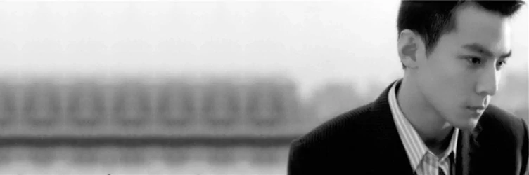

人物简历——吴彦祖

基本信息
吴彦祖（Daniel Wu），1974年9月30日出生于美国旧金山，华语影视男演员、导演、制片人，毕业于美国俄勒冈大学。1998年，因出演个人首部电影作品《美少年之恋》进入演艺圈；同年，凭借文艺片《玻璃之城》提名第18届香港电影金像奖最佳新演员。2001年，主演文艺片《游园惊梦》。2003年，首次担任监制并主演了惊悚片《妖夜回廊》，凭该片首次提名第40届台湾电影金马奖最佳男主角。
早年经历
吴彦祖出生于加利福尼亚州伯克利，并在奥林达长大 。6岁时，吴彦祖在看完功夫电影《少林寺》后，对武术产生了兴趣 。11岁时，吴彦祖便拜一名北京艺人为师开始习武，教他的师父是吴彦祖的母亲找的，而此前，他的母亲还担心他学会了功夫跟人打架，但最后还是拗不过他对习武的热情 。高中时，吴彦祖也曾叛逆过，经常在街上玩滑板，听的是朋克、重金属、饶舌等地下音乐，喜欢打架更甚于学习。这一切直至他的母亲因心脏病住院才有了彻底的改变。在母亲生病期间，吴彦祖白天在学校认真读书，下课后就到医院陪母亲。为此他甚至去学习了简单的气功疗法，用来辅助母亲的治疗 。
1993年，吴彦祖在美国俄勒冈大学攻读建筑系，并获得建筑副修奖学金。1994年，吴彦祖赢得California Martial Art Competitions的亚军，并在美国西岸排名第二位。同时，吴彦祖还成立了俄勒冈大学中国武术学会，并成为第一任教练，收了二十几个徒弟，一共教了五年。1995年，吴彦祖随师父到北京什刹海武校参加集训，并获得了北京国际武术比赛长拳组第五名，太极拳组第六名 。
1997年，毕业后的吴彦祖前往香港旅行，后在姐姐的建议下开始当模特。四个月后，导演杨凡在看到吴彦祖拍摄的服装广告后，与他接洽成为他下一部电影的演员，而吴彦祖表示自己没有表演经验而拒绝了。后来杨凡天天给吴彦祖打电话并说服了他。
演艺经历
| 时期 | 经历 |
|---|---|
| 1998年 | 吴彦祖被杨凡导演选中，接拍了个人首部电影作品《美少年之恋》 |
| 1999年 | 吴彦祖与成龙、舒淇合作主演的爱情喜剧片《玻璃樽》上映 |
| 2000年 | 首次与林超贤导演合作，并出演了警匪动作片《重装警察》 |
| 2001年 | 首次与古天乐合作，并出演了动作片《野兽之瞳》 |
| 2002年 | 吴彦祖与杨千嬅首次合作，并出演了爱情喜剧片《新扎师妹》 |
| 2003年 | 再次与杨千嬅合作出演了喜剧片《新扎师妹2》 |
| 2004年 | 与张柏芝合作，出演由尔冬升执导的动作剧情片《旺角黑夜》 |
| 2005年 | 吴彦祖与梁家辉、郑秀文合作，主演了根据同名小说改编的爱情片《长恨歌》 |
| 2006年 | 吴彦祖执导并担任编剧的个人电影处女作《四大天王》上映 |
| 2007年 | 吴彦祖与尔冬升导演合作的犯罪剧情片《门徒》上映 |
| 2009年 | 与成龙合作主演的动作片《新宿事件》上映 |
| 2010年 | 吴彦祖与徐若瑄等众多艺人联合主演的爱情片《全城热恋》上映 |
| 2011年 | 与古天乐、高圆圆合作主演的都市爱情片《单身男女》上映 |
| 2012年 | 由伍仕贤执导的剧情片《形影不离》上映 |
| 2013年 | 吴彦祖担任监制并主演的犯罪动作片《控制》上映 |
| 2014年 | 与张家辉领衔主演的悬疑犯罪片《魔警》上映 |
获奖记录
| 获奖时间 | 奖项名称 | 获奖作品 | 获奖结果 |
|---|---|---|---|
| 2015-02 | 第34届香港电影金像奖最佳男主角奖 | 《魔警》 | 提名 |
| 2007-04 | 第26届香港电影金像奖新晋导演奖 | 《四大天王》 | 获奖 |
| 2005-04 | 第24届香港电影金像奖最佳男主角奖 | 《旺角黑夜》 | 提名 |
| 2005-04 | 第24届香港电影金像奖最佳男配角奖 | 《新警察故事》 | 提名 |
| 2014-12 | 第6届澳门国际电影节最佳男主角奖 | 《魔警》 | 提名 |
| 2009-10 | 第46届台湾电影金马奖最佳男主角奖 | 《如梦》 | 提名 |
| 2005-03 | 第10届香港电影金紫荆奖最佳男配角奖 | 《新警察故事》 | 提名 |
| 2007-05 | 第7届华语电影传媒大奖最佳新导演奖 | 《四大天王》 | 获奖 |
| 2022-02 | 2021“年度最佳电影角色奖” | 《除暴》 | 提名 |
社会活动
2006年底，在中国香港“SuperStars”影展及摄影集慈善义卖活动上，余文乐、吴彦祖、郭富城等300多位明星为慈善活动所拍摄的裸照曝光。
2008年6月4日，吴彦祖录制爱心视频并参与了周迅发起的“星星之火，传爱四川”行动。
2009年2月，吴彦祖为四川地震灾区彭州小鱼洞的群众修建永久性房屋；5月10日，吴彦祖参加了“壹家人壹起走——纪念5.12汶川行”活动 ；7月6日，吴彦祖向四川地震灾区出资捐建5间房屋，并且表示每年都会抽出几次时间去四川探访 ；9月20日，吴彦祖携手吴君如在香港出席了“仁人家园义工周”的公益活动。
2013年11月1日，“2014爱·家庭慈善月历”在香港推出，包括吴彦祖等在内的12个明星家庭齐心推动此公益活动。
2018年1月6日，吴彦祖参与设计的作品“木兰坊”入围了有"建筑界奥斯卡"的英国皇家建筑师学会奖。这是吴彦祖与好友冯德伦参加真人秀节目《漂亮的房子》时，其团队与建筑师张海翱合作前往中国河北木兰围场，以80万元的预算兴建了一座可居住的图书馆“木兰坊”。
联系信息
请将你想告诉我的信息发送至我的邮箱:
©2022 Baidu 使用百度前必读 | 百科协议 | 隐私政策 | 百度百科合作平台 | 京ICP证030173号